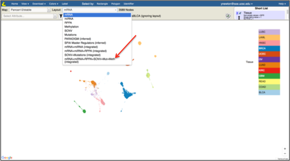
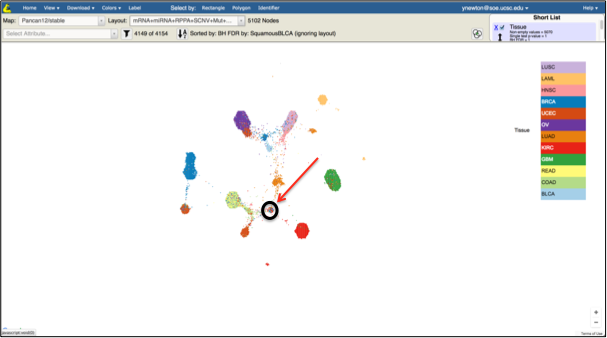
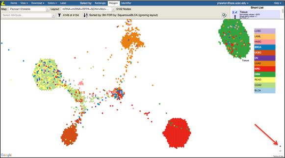
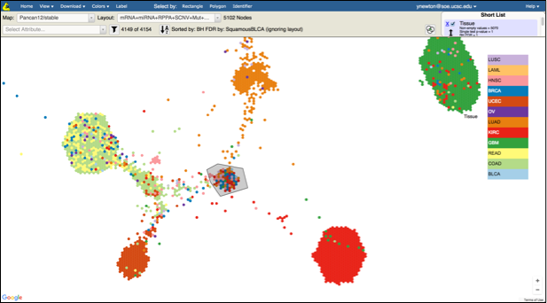
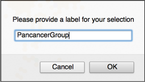
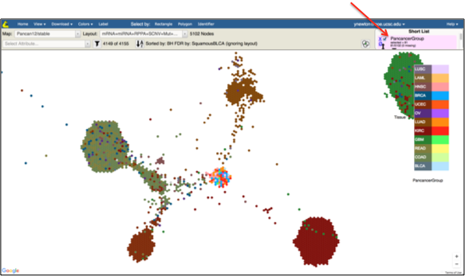

Objective:
- Make a group from a set of samples of interest.
Skills Covered:
- Selecting a new data type to view as a new layout.
- Create a new group from a user-drawn region encompassing a set of samples.
Steps:
- In the Tumor Map, make sure the mRNA+miRNA+RPPA+SCNV+Mut+Meth (integrated) layout is selected

- In the Short List, make sure Tissue is checked and no other attributes are checked
- In the middle of the map you can find a cluster of samples of mixed tissue of origin (see illustration). This is our pan-cancer group of interest

- Use zoom in/out control in the bottom right of the map to zoom into the region containing the pan-cancer group

- Click on Select By drop down and select Polygon
- Select the samples belonging to the pan-cancer group (double click to end defining the polygon)

- Specify the name of the group (e.g. PancancerGroup) in the popup box

- Notice that this name now shows up in the Short List as a custom annotation
